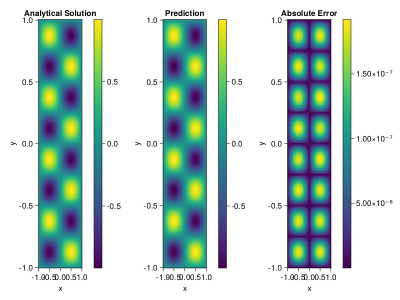

Helmholtz equation
Let us consider the Helmholtz equation in two space dimensions
\[\begin{aligned} &\Delta u(x, y)+k^{2} u(x, y)=q(x, y), \quad(x, y) \in \Omega:=(-1,1)^2 \\ &u(x, y)=0, \quad(x, y) \in \partial \Omega \end{aligned}\]
where
\[q(x, y)=-\left(a_{1} \pi\right)^{2} \sin \left(a_{1} \pi x\right) \sin \left(a_{2} \pi y\right)-\left(a_{2} \pi\right)^{2} \sin \left(a_{1} \pi x\right) \sin \left(a_{2} \pi y\right)+k^{2} \sin \left(a_{1} \pi x\right) \sin \left(a_{2} \pi y\right).\]
The excat solution is $u(x,y)=\sin{a_1\pi x}\sin{a_2\pi y}$. We chose $k=1, a_1 = 1$ and $a_2 = 4$.
using ModelingToolkit, IntervalSets, Sophon, Lux
using Optimization, OptimizationOptimJL
@parameters x,y
@variables u(..)
Dxx = Differential(x)^2
Dyy = Differential(y)^2
a1 = 1
a2 = 4
k = 1
q(x,y) = -(a1*π)^2 * sin(a1*π*x) * sin(a2*π*y) - (a2*π)^2 * sin(a1*π*x) * sin(a2*π*y) + k^2 * sin(a1*π*x) * sin(a2*π*y)
eq = Dxx(u(x,y)) + Dyy(u(x,y)) + k^2 * u(x,y) ~ q(x,y)
domains = [x ∈ Interval(-1,1), y ∈ Interval(-1,1)]
bcs = [u(-1,y) ~ 0, u(1,y) ~ 0, u(x, -1) ~ 0, u(x, 1) ~ 0]
@named helmholtz = PDESystem(eq, bcs, domains, [x,y], [u(x,y)])\[ \begin{align} \frac{\mathrm{d}}{\mathrm{d}y} \frac{\mathrm{d}}{\mathrm{d}y} u\left( x, y \right) + \frac{\mathrm{d}}{\mathrm{d}x} \frac{\mathrm{d}}{\mathrm{d}x} u\left( x, y \right) + u\left( x, y \right) =& - 166.78 \sin\left( 3.1416 x \right) \sin\left( 12.566 y \right) \end{align} \]
Note that the boundary conditions are compatible with periocity, which allows us to apply BACON.
chain = BACON(2, 1, 5, 2; hidden_dims = 32, num_layers=5)
pinn = PINN(chain) # call `gpu` on it if you want to use gpu
sampler = QuasiRandomSampler(300, 100)
strategy = NonAdaptiveTraining()
prob = Sophon.discretize(helmholtz, pinn, sampler, strategy)
@time res = Optimization.solve(prob, BFGS(); maxiters=1000)u: ComponentVector{Float64}(filters = (filter_1 = (bias = [-0.4120732900608586; 0.33751614796129925; … ; -0.06025851717579738; -0.8655047150491065;;]), filter_2 = (bias = [-1.0244156632865478; -0.8315538825834016; … ; 0.5305573931679357; 0.3289186009573478;;]), filter_3 = (bias = [-0.12902054532890242; -0.13196974996278446; … ; -0.7671524723926906; 0.2716961953279536;;]), filter_4 = (bias = [0.8054541319629551; 0.09204331411791779; … ; -0.6994423973422517; -0.004753522190637359;;]), filter_5 = (bias = [0.18132432094530412; -0.22792539137441228; … ; 0.6855212133696348; -0.13523440720307559;;])), linear_layers = (layer_1 = (weight = [-0.409092243721824 -0.1262546578387954 … 0.23091945002979944 -0.0991692801405644; -0.28303487283751855 0.24268131631671094 … 0.4881796152497623 0.4388496607909677; … ; -0.04785860437196307 -0.42693541485632996 … 0.16603529383769322 -0.3972080268587832; -0.25346670809807753 0.1461688387411007 … 0.10846640561780227 0.1933685816654474], bias = [0.034430064192221575; -0.0296678738937018; … ; 0.03168465954398429; 0.010066406192576127;;]), layer_2 = (weight = [0.24654489788549713 -0.10871444546359912 … 0.10395611144839226 -0.08783537578157583; 0.14149231008779778 -0.04950428297861985 … 0.3208375673905412 -0.22602130736694742; … ; -0.047203268735298946 0.05818508997383212 … -0.3257223619918053 0.18855824449371833; 0.1472660330660025 -0.27662663273521076 … 0.39552387675859824 -0.4772910200934715], bias = [0.022278425567663965; 0.014387692922809964; … ; -0.0090720900031127; -0.0028424344587957696;;]), layer_3 = (weight = [0.2645844822493591 -0.09474387037987551 … -0.2739310922197112 0.3692159723610516; 0.3950908884002491 -0.18964766740761171 … 0.4200240555173867 -0.03797017312988221; … ; 0.1596028146891665 0.004943568829944306 … 0.03145687183376688 -0.045934997532301125; 0.27710509378279996 -0.26147696673178356 … -0.36415087286054243 -0.10014215164877105], bias = [-0.007997489982696651; -0.0033499492790222294; … ; 0.003774199750852435; -0.0005759941745852666;;]), layer_4 = (weight = [-0.22835173030924155 -0.07224729350269099 … 0.3410188996555198 0.4021919991372014; -0.17577957875133213 0.16106924064264422 … 0.19019751639471524 -0.1842764157666364; … ; -0.2237302719074186 -0.018639352752733446 … -0.42735988036013917 -0.03921779862111902; 0.21904914803489495 0.2872731989340981 … -0.380178427719261 -0.014254718196995902], bias = [-0.002069684392827722; 0.013421978924624652; … ; 0.01857372406208664; 0.003968494676495838;;])), output_layer = (weight = [-0.03126254221473652 -0.2507448898059447 … 0.2581078244111394 0.14952260258189493], bias = [0.07759634166395109;;]))Let's plot the result.
phi = pinn.phi
xs, ys= [infimum(d.domain):0.01:supremum(d.domain) for d in domains]
u_analytic(x,y) = sinpi(a1*x)*sinpi(a2*y)
u_real = [u_analytic(x,y) for x in xs, y in ys]
phi_cpu = cpu(phi) # in case you are using GPU
ps_cpu = cpu(res.u)
u_pred = [sum(phi_cpu(([x,y]), ps_cpu)) for x in xs, y in ys]
using CairoMakie
axis = (xlabel="x", ylabel="y", title="Analytical Solution")
fig, ax1, hm1 = heatmap(xs, ys, u_real, axis=axis)
Colorbar(fig[:, end+1], hm1)
ax2, hm2= heatmap(fig[1, end+1], xs, ys, u_pred, axis= merge(axis, (;title = "Prediction")))
Colorbar(fig[:, end+1], hm2)
ax3, hm3 = heatmap(fig[1, end+1], xs, ys, abs.(u_pred-u_real), axis= merge(axis, (;title = "Absolute Error")))
Colorbar(fig[:, end+1], hm3)
fig